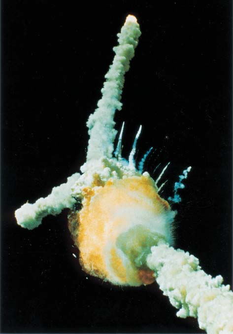
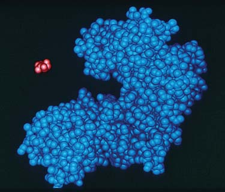
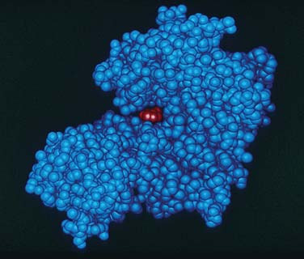
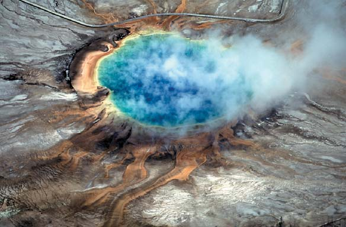

7 Energía y metabolismo
154
Panda gigante ( Ailuropoda melanoleuca ). La energía química producida mediante fotosíntesis y almacenada en las hojas del bambú se transfi ere al panda cuando las come.
CONCEPTOS CLAVE
7.1 Energía, la capacidad para realizar trabajo, puede ser energía cinética (energía de movimiento) o energía potencial (energía debida a la posición o al estado). 7.2 La energía no puede crearse o destruirse (primera ley de la termodinámica), pero la cantidad total de energía disponible para efectuar trabajo en un sistema cerrado disminuye con el tiempo (segunda ley de la termodinámica). Los organismos cumplen las leyes de la termodinámica porque, como sistemas abiertos, éstos utilizan la energía que obtienen para realizar trabajo. 7.3 En las células, los procesos que liberan energía (exergónicos) y los procesos que requieren energía (endergónicos) son una unidad. 7.4 El ATP desempeña un papel central en el metabolismo energético celular porque conecta a las reacciones exergónicas y endergónicas. El ATP transfi ere energía al mover un grupo fosfato. 7.5 La transferencia de electrones en reacciones redox es otra forma en que las células transfi eren energía. 7.6 Como catalizadores biológicos, las enzimas aumentan la rapidez de reacciones químicas específi cas. La actividad de una enzima está infl uenciada por la temperatura, el pH, la presencia de cofactores, e inhibidores y(o) activadores.
T
odos los seres vivos requieren energía para realizar los procesos vitales. Puede parecer obvio que las células necesiten energía para crecer y reproducirse, pero aún células que no crecen requieren energía para mantenerse a sí mismas. Las células tienen muchas formas de obtener energía, pero raramente esa energía se utiliza directamente en los procesos celulares. Por esta razón, las células tienen mecanismos que convierten energía de una forma a otra. La organización del sistema celular provee la información que hace posible esas transformaciones energéticas. Como la mayoría de mecanismos de conversión de energía evolucionaron muy temprano en la historia de la vida, entonces muchos aspectos del metabolismo energético tienden a ser similares en un amplio rango de organismos. El Sol es la fuente fi nal de casi toda la energía que sostiene a la vida; esta energía radiante fl uye del Sol como ondas electromagnéticas. Las plantas y otros organismos fotosintéticos capturan alrededor del 0.02% de la energía solar que llega a la Tierra. Como se analiza en el capítulo 9, los organismos fotosintéticos convierten energía radiante en energía química en los enlaces de moléculas orgánicas. Esta energía química queda disponible para las plantas, animales como el panda gigante que se muestra en la fotografía, y otros organismos a través del proceso de respiración celular. En la respiración celular, que se analiza en el capítulo 8, las moléculas orgánicas se degradan y su energía se convierte en formas de uso más inmediato.
Karen Sw/Corbís
Energía y metabolismo 155
En este capítulo se estudian algunos de los principios básicos que determinan cómo las células capturan, transfieren, almacenan y utilizan la energía. Se analizan las funciones del trifosfato de adenosina (ATP) y otras moléculas empleadas en conversiones de energía, incluyendo aquellas que transfi eren electrones en reacciones de reducciónoxidación (redox). También se dedica atención particular a la función esencial de las enzimas en la dinámica energética celular. En el capítulo 55 se analiza el fl ujo de energía en ecosistemas.
7.1 TRABAJO BIOLÓGICO
OBJETIVOS DE APRENDIZAJE
1 Defi nir energía , enfatizando cómo se relaciona con el trabajo y el calor. 2 Dar ejemplos para comparar la energía potencial con la energía cinética.
Energía, uno de los conceptos más importantes en biología, puede comprenderse en el contexto de materia , que es todo lo que tiene masa y ocupa un espacio. La energía se defi ne como la capacidad para hacer trabajo, que es cualquier cambio de estado o de movimiento de la materia. Técnicamente, la masa es una forma de energía, que es la base de la energía generada por el Sol y otras estrellas. En el Sol, más de 4 mil millones de kilogramos de materia se convierten en energía cada segundo. En general, los biólogos expresan la energía en unidades de trabajo, kilojoules (kJ) . También se pueden expresar en unidades de energía calorífi ca , kilocalorías (kcal) , la energía térmica que fl uye de un objeto con mayor temperatura a un objeto con menor temperatura. Una kilocaloría es igual a 4.184 kJ. La energía calorífi ca no puede realizar trabajo celular porque una célula es tan pequeña que tiene regiones que difi eren en temperatura. Por esa razón, actualmente la unidad más preferida por los biólogos es el kilojoule. Sin embargo, en este libro se utilizarán ambas unidades porque en la literatura científi ca son comunes las referencias a las kilocalorías.
Los organismos realizan conversiones entre energía potencial y energía cinética
Cuando un arquero tensa un arco y dispara, la energía cinética , energía de movimiento es utilizada para efectuar este trabajo ( FIGURA 7-1 ). La tensión resultante en el arco y en la cuerda representa la energía almacenada o potencial. La energía potencial es la capacidad para realizar trabajo como consecuencia de la posición o del estado. Cuando la cuerda es liberada, esta energía potencial se convierte en energía cinética en el movimiento del arco, que a su vez impulsa la fl echa. La mayoría de las acciones de un organismo implican una serie de transformaciones energéticas que ocurren conforme la energía cinética se convierte en energía potencial o viceversa. La energía química , que es la energía potencial almacenada en los enlaces químicos, es de particular importancia para los organismos. En este ejemplo, la energía química de las moléculas alimenticias se convierte en energía cinética en las células musculares del arquero. La contracción de sus músculos, al igual que muchas de las actividades efectuadas por un organismo, es un ejemplo de energía mecánica , que realiza trabajo al mover la materia.
Repaso
■ Cuando usted ejerce tensión sobre un resorte y después lo suelta. ¿Cómo se relacionan estas acciones con el trabajo, la energía potencial y la energía cinética?
7.2 LAS LEYES DE LA TERMODINÁMICA
OBJETIVO DE APRENDIZAJE
3 Establecer la primera y segunda leyes de la termodinámica, y analizar las implicaciones de esas leyes en relación con los organismos.
La termodinámica , el estudio de la energía y sus transformaciones, gobierna todas las actividades del universo, desde la vida y muerte de células hasta la vida y muerte de estrellas. En el contexto de la termodinámica, los científi cos utilizan el término sistema para referirse al objeto bajo estudio, sea una célula, un organismo, o el planeta Tierra. El resto del universo externo al sistema bajo análisis constituye sus alrededores . Un sistema cerrado no intercambia energía con sus alrededores, mientras que un sistema abierto sí puede hacerlo ( FIGURA 7-2 ). Los sistemas biológicos son sistemas abiertos. Existen dos leyes de energía que se aplican a todas las cosas en el universo: la primera y segunda leyes de la termodinámica.
La energía total en el universo no cambia
De acuerdo con la primera ley de la termodinámica , la energía no se puede crear o destruir, aunque se puede transferir o convertir de una forma a otra, incluyendo las conversiones entre materia y energía. Hasta donde se sabe, la masa-energía total presente en la formación del universo, hace casi 14 mil millones de años, es igual a la cantidad de energía
POTENCIAL Energía de posición
CINÉTICA Energía de movimiento
FIGURA 7-1 Energía potencial y energía cinética La energía química potencial liberada mediante la respiración celular se convierte en energía cinética en los músculos, que hacen el trabajo de estirar el arco. La energía potencial almacenada en el arco estirado se transforma en energía cinética conforme la cuerda impulsa la fl echa hacia su objetivo.
156 Capítulo 7
mil millones de años, toda la energía existirá como calor uniformemente distribuido a través del universo. Si eso pasa, entonces el universo dejará de operar porque no será posible realizar ningún trabajo. Todo estará a la misma temperatura, así que no habrá manera de convertir energía térmica del universo en energía mecánica utilizable. Como consecuencia de la segunda ley de la termodinámica, ningún proceso que requiera una conversión de energía es 100% efi ciente ya que mucha energía es dispersada como calor, incrementando la entropía. Por ejemplo, el motor de un automóvil, que convierte la energía química de la gasolina en energía mecánica, tiene una efi ciencia entre el 20% y 30%. Así, sólo del 20% al 30% de la energía original almacenada en los enlaces químicos de las moléculas de gasolina realmente se transforma en energía mecánica; el otro del 70% al 80% se disipa como desecho calórico. La energía empleada en nuestras células tiene un 40% de efi ciencia y cede la energía restante en forma de calor a los alrededores. Los organismos tienen un alto grado de organización, y a primera vista puede parecer que no cumplen la segunda ley de la termodinámica. Conforme los organismos crecen y se desarrollan, mantienen un elevado nivel de orden y no parecen irse desorganizando. Sin embargo, los organismos son sistemas abiertos; conforme pasa el tiempo sostienen su nivel de orden sólo con la constante entrada de energía de sus alrededores. Por esto las plantas deben realizar la fotosíntesis y los animales deben comer. Aunque, dentro de los organismos, el orden puede tender a incrementarse temporalmente, la entropía total del universo (organismos más alrededores) siempre aumenta con el tiempo.
Repaso
■ ¿Cuál es la primera ley de la termodinámica? ¿La segunda ley?
■ Algunas veces la vida se describe como una batalla constante contra la segunda ley de la termodinámica. ¿Qué hacen los organismos para triunfar en esta batalla sin violar la segunda ley?
7.3 ENERGÍA Y METABOLISMO
OBJETIVOS DE APRENDIZAJE
4 Analizar cómo los cambios de energía libre en una reacción están relacionados con los cambios en entropía y entalpía. 5 Distinguir entre reacciones exergónicas y endergónicas, y ejemplifi car cómo se pueden acoplar. 6 Comparar la dinámica energética de una reacción en equilibrio con la dinámica de una reacción fuera del sistema en equilibrio.
Las reacciones químicas que le permiten a un organismo realizar sus actividades, crecer, moverse, mantenerse y repararse a sí mismo; reproducirse; y responder a estímulos, constituyen su metabolismo. Del capítulo 1 recuerde que el metabolismo es la suma de todas las actividades químicas que ocurren en un organismo. El metabolismo de un organismo consiste en muchas series de reacciones químicas, o rutas metabólicas que se cruzan. El anabolismo y el catabolismo son las dos principales rutas del metabolismo. El anabolismo incluye las diversas rutas en las que se sintetizan moléculas complejas a partir de sustancias más simples, como la unión de aminoácidos para formar proteínas. El catabolismo incluye las rutas en las que grandes moléculas se dividen en moléculas más pequeñas, como en la degradación de almidón para formar monosacáridos.
actual en el universo. Ésta es toda la energía que puede estar presente en el universo. De igual forma , la energía de cualquier sistema más la de sus alrededores es constante. Un sistema puede absorber energía de sus alrededores, o puede dar a éstos alguna energía, pero siempre es el mismo contenido de energía total de ese sistema más sus alrededores. Como se especifi ca con la primera ley de la termodinámica, los organismos no pueden crear la energía que requieren para vivir. Entonces, éstos deben capturar energía del ambiente y convertirla a una forma que se pueda utilizar para trabajo biológico.
La entropía del universo es creciente
La segunda ley de la termodinámica establece que cuando la energía se convierte de una forma a otra, alguna energía utilizable, es decir, energía disponible para efectuar trabajo, se convierte en calor que se dispersa en los alrededores (vea la fi gura 55-1 para una ilustración del fl ujo de energía a través de un ecosistema). Como aprendió en el capítulo 2, el calor es la energía cinética de partículas en movimiento aleatorio. A diferencia de la energía calorífi ca , que fl uye de un objeto de mayor temperatura a otro con menor temperatura, este movimiento aleatorio no puede realizar trabajo. Como resultado, en el universo disminuye la cantidad de energía utilizable para efectuar trabajo. Es importante entender que la segunda ley de la termodinámica es consistente con la primera ley; es decir, en el universo no está disminuyendo la cantidad total de energía. Sin embargo, en el universo sí está disminuyendo la cantidad total de energía utilizable o disponible para efectuar trabajo. La energía en forma menos utilizable es más difusa, o desorganizada. La entropía ( S ) es una medida de este desorden, o aleatoriedad; la energía utilizable tiene baja entropía, está organizada, mientras que la energía desorganizada, como el calor, tiene alta entropía. En el universo la entropía se está incrementando en forma continua en todos los procesos naturales. Quizás en algún momento, dentro de
Un sistema cerrado no intercambia energía con sus alrededores.
Un sistema abierto intercambia energía con sus alrededores.
Sistema cerrado
Alrededores Alrededores
Intercambio de energía
Sistema abierto
FIGURA 7-2 Sistemas cerrados y abiertos
Energía y metabolismo 157
puede medir de manera efectiva, la ecuación G = H – TS se puede ampliar para predecir si una reacción química particular liberará energía o requerirá de un ingreso de energía. La razón es que pueden medirse los cambios en la energía libre. Los científi cos utilizan la letra griega mayúscu la delta ( ∆ ) para denotar cualquier cambio que ocurre en el sistema entre su estado inicial antes de la reacción y su estado fi nal posterior a la reacción. Para expresar qué ocurre, con respecto a la energía, en una reacción química, la ecuación queda:
∆ G = ∆ H − T ∆ S
Observe que la temperatura no cambia; se conserva constante durante la reacción. Así, el cambio en la energía libre ( ∆ G ) durante la reacción es igual al cambio en la entalpía ( ∆ H ) menos el producto de la temperatura absoluta ( T ) en unidades kelvin multiplicada por el cambio en la entropía ( ∆ S ). Los científi cos expresan a ∆ G y ∆ H en kilojoules o kilocalorías por mol; e indican ∆ S en kilojoules o kilocalorías por kelvin.
La energía libre disminuye durante una reacción exergónica
Una reacción exergónica libera energía y se dice que es una reacción espontánea o una “reacción cuesta abajo”, de alta energía libre a más baja ( FIGURA 7-3a ). Como la energía libre total en su estado fi nal es menor que la energía libre total en su estado inicial, entonces ∆ G es un número negativo para reacciones exergónicas. El término espontánea puede dar la falsa impresión de que tales reacciones siempre son instantáneas. En efecto, las reacciones espontáneas no necesariamente ocurren con rapidez; algunas son en extremo lentas. La razón es que se requiere energía, conocida como energía de activación , para iniciar toda reacción, aun en una reacción espontánea. Más adelante, en este capítulo, se analiza la energía de activación.
La energía libre se incrementa durante una reacción endergónica
Una reacción endergónica es una reacción en la que existe ganancia de energía libre ( FIGURA 7-3b ). Como la energía libre de los productos es mayor que la energía libre de los reactivos, entonces ∆ G tiene un valor positivo. Esta reacción no puede ocurrir aisladamente. Más bien, debe suceder de manera que la energía pueda ser obtenida de los alrededores.
Como se verá, esos cambios no sólo implican alteraciones en la organización atómica sino que también en varias transformaciones energéticas. El catabolismo y el anabolismo son procesos complementarios; las rutas catabólicas implican una total liberación de energía, algunas de las cuales alimentan rutas anabólicas, que tienen un requerimiento energético total. En las siguientes secciones, se analiza cómo predecir si una reacción química particular necesita energía o la libera.
La entalpía es la energía potencial total de un sistema
En el curso de cualquier reacción química, incluyendo las reacciones metabólicas de una célula, los enlaces químicos se rompen y entonces se pueden formar nuevos y diferentes enlaces. Cada tipo específi co de enlace químico tiene una cierta cantidad de energía de enlace , defi nida como la energía requerida para romper dicho enlace. La energía de enlace total, equivale en esencia a la energía potencial total del sistema, cantidad conocida como entalpía ( H ) .
La energía libre está disponible para realizar trabajo celular
La entropía y la entalpía están relacionadas con un tercer tipo de energía, llamada energía libre ( G ) , que es la cantidad de energía disponible para efectuar trabajo bajo las condiciones de una reacción química. ( G , también conocida como “energía libre de Gibbs”, en honor a J. W. Gibbs, profesor de Yale y uno de los fundadores de la ciencia de la termodinámica). La energía libre, el único tipo de energía que puede realizar trabajo celular, es el tema de la termodinámica de mayor interés para un biólogo. La entalpía, la energía libre y la entropía se relacionan mediante la siguiente ecuación:
H = G + TS
en donde H es la entalpía; G es la energía libre; T es la temperatura absoluta del sistema, expresada en unidades kelvin; y S es la entropía. Sin considerar por el momento a la temperatura, la entalpía (energía total de un sistema) es igual a la energía libre (la energía utilizable) más la entropía (la energía no utilizable). Un reordenamiento de la ecuación muestra que conforme la entropía se incrementa, entonces decrece la cantidad de energía libre:
G = H − TS
Si se supone que la entropía es cero, entonces la energía libre es simplemente igual a la energía potencial total (entalpía); un incremento en la entropía reduce la cantidad de energía libre. ¿Cuál es el signifi cado de la temperatura ( T )? Recuerde que al aumentar la temperatura, existe un incremento en el movimiento molecular aleatorio, que contribuye al desorden y multiplica el efecto del término entrópico.
Las reacciones químicas implican cambios en la energía libre
Los biólogos analizan el papel de la energía en las múltiples reacciones bioquímicas del metabolismo. No obstante que la energía libre total de un sistema ( G ) no se
Energía libre ( G )
Avance o curso de la reacción
Reactivos
Productos
La energía libre disminuye
Energía libre ( G )
Reactivos
Productos
La energía libre aumenta
En una reacción exergónica, existe una pérdida neta de energía libre. Los productos tienen menos energía libre que la presente en los reactivos, y la reacción ocurre espontáneamente.
En una reacción endergónica, existe una ganancia neta de energía libre. Los productos tienen más energía libre que la que estaba presente en los reactivos.
Avance o curso de la reacción
FIGURA 7-3 Animada Reacciones exergónicas y endergónicas
158 Capítulo 7
En la mayoría de las reacciones bioquímicas existe poca diferencia de energía libre intrínseca entre reactivos y productos. Estas reacciones son reversibles, lo que se indica dibujando fl echas dobles:
A Δ B
Al inicio de una reacción, sólo pueden estar presentes las moléculas de los reactivos (A). Conforme la reacción procede, disminuye la concentración de las moléculas de los reactivos y aumenta la concentración de las moléculas del producto (B). Conforme aumenta la concentración de las moléculas del producto, éstas pueden tener sufi ciente energía libre para iniciar la reacción inversa. Así la reacción se efectúa en ambas direcciones en forma simultánea; si no es perturbada, fi nalmente alcanza un estado de equilibrio dinámico , en el que la rapidez de la reacción es igual en las dos direcciones. En equilibrio no existe cambio neto en el sistema; una reacción balancea a la reacción contraria. A temperatura y presión dadas, cada reacción tiene su propio equilibrio característico. Para cualquier reacción dada, los químicos pueden realizar experimentos y cálculos para determinar las concentraciones relativas de los reactivos y productos presentes en la reacción en equilibrio. Si los reactivos tienen mucha mayor energía libre intrínseca que los productos, la reacción prácticamente se realiza por completo; es decir, alcanza el equilibrio en un punto en donde la mayor parte de los reactivos se han convertido a productos. En las reacciones donde los reactivos tienen mucho menos energía libre intrínseca que los productos, el equilibrio se logra en un punto donde muy pocas de las moléculas de los reactivos se han convertido en productos. Si se incrementa la concentración inicial de A, entonces la reacción “se desplazará a la derecha”, y más moléculas A se convertirán en moléculas B. Un efecto similar se obtiene si éstas se eliminan de la mezcla reactiva. La reacción siempre se desplaza en la dirección que reinstala el equilibrio para restaurar las proporciones de reactivos y productos característicos de esa reacción. El efecto opuesto ocurre si se aumenta la concentración de moléculas B o si las moléculas A son eliminadas; aquí el sistema se “desplaza a la izquierda”. El cambio de energía libre real que ocurre durante una reacción está defi nida matemáticamente para incluir esos efectos, que proceden de las concentraciones iniciales relativas de reactivos y productos. Las células utilizan energía para manipular las concentraciones relativas de reactivos y productos de casi toda reacción. En general, las reacciones celulares rara vez están en equilibrio. Al desplazar sus reacciones lejos del equilibrio, las células proporcionan energía a reacciones endergónicas y dirigen su metabolismo de acuerdo con sus necesidades.
Las células impulsan reacciones endergónicas acoplándolas a reacciones exergónicas
Muchas reacciones metabólicas, como la síntesis de proteína, son anabólicas y endergónicas. Ya que una reacción endergónica no puede ocurrir sin el ingreso de energía, entonces las reacciones endergónicas están acopladas a reacciones exergónicas. En las reacciones acopladas , la reacción exergónica termodinámicamente favorable proporciona la energía requerida para manejar la reacción endergónica, termodinámicamente desfavorable. La reacción endergónica sólo procede si absorbe la energía libre cedida por la reacción exergónica a la que está acoplada. Considere el cambio de energía libre, ∆ G , en la siguiente reacción:
- A ¡ B ∆ G = + 20.9 kJ/mol ( + 5 kcal/mol)
De hecho, en las células hay muchas reacciones que requieren energía, y como se verá, los mecanismos metabólicos han evolucionado para aportar la energía que “impulsa” estas reacciones celulares no espontáneas en una dirección dada.
La difusión es un proceso exergónico
En el capítulo 5, se vio que las partículas que se mueven aleatoriamente se difunden disminuyendo su propio gradiente de concentración ( FI-
GURA 7-4 ). No obstante que los movimientos de las partículas individuales son aleatorios, el movimiento neto del grupo de partículas parece ser direccional. ¿Qué proporciona energía a este proceso aparentemente direccional? Un gradiente de concentración , con una región de alta concentración y otra región de más baja concentración, es un estado ordenado. Una célula debe gastar energía para producir un gradiente de concentración. Como el trabajo es realizado para producir este orden, entonces un gradiente de concentración es una forma de energía potencial. Conforme las partículas se mueven aleatoriamente, el gradiente se degrada. Así, la energía libre disminuye al aumentar la entropía. En la respiración celular y en la fotosíntesis, la energía potencial almacenada en un gradiente de concentración de iones de hidrógeno (H + ) es transformada en energía química en trifosfato de adenosina (ATP) conforme los iones de hidrógeno atraviesan la membrana disminuyendo su gradiente de concentración. Este importante concepto, conocido como quimiosmosis , se analiza en detalle en los capítulos 8 y 9.
Los cambios en la energía libre dependen de la concentración de reactivos y productos
De acuerdo con la segunda ley de la termodinámica, cualquier proceso que incrementa la entropía puede realizar trabajo. Como ya se ha analizado, las diferencias en la concentración de una sustancia, como ocurre entre dos partes distintas de una célula, representan un estado más ordenado que cuando la sustancia se difunde homogéneamente a través de la célula. Los cambios de la energía libre en cualquier reacción química dependen principalmente de la diferencia en las energías de enlace (entalpía, H ) entre los reactivos y los productos. La energía libre también depende de las concentraciones tanto de los productos como de los reactivos.
Gradiente de concentración
Exergónico (proceso que ocurre espontáneamente)
Cuando las moléculas están distribuidas uniformemente, tienen gran entropía.
Un gradiente de concentración es una forma de energía potencial.
FIGURA 7-4 Entropía y difusión La tendencia al aumento de la entropía se puede emplear para realizar trabajo, en este caso, difusión.
Energía y metabolismo 159
En todas las células vivas, la energía está temporalmente almacenada dentro de un conocido compuesto químico llamado trifosfato de adenosina (ATP) , que conserva la energía disponible durante muy cortos períodos. Al ATP se le puede considerar la moneda energética de la célula. Cuando se trabaja para ganar dinero, se podría decir que esta energía está simbólicamente almacenada en el dinero ganado. La energía que la célula requiere para uso inmediato está temporalmente guardada en el ATP, como si fuera dinero en efectivo. Cuando usted gana dinero extra, una parte de éste la puede depositar en el banco; de manera similar, una célula puede depositar energía en los enlaces químicos de lípidos, almidones, o glucógeno. Además, al igual que usted no gasta más dinero que el que gana, así la célula debe evitar la quiebra energética, que signifi caría su muerte. Por último, al igual que usted, el dinero que obtiene no lo guarda por mucho tiempo, la célula gasta continuamente su ATP, que debe reemplazarse de inmediato. El ATP es un nucleótido que consiste en tres partes principales: adenina, una base orgánica que contiene nitrógeno; ribosa, un azúcar de cinco carbonos; y tres grupos fosfato, identifi cables como átomos de fósforo rodeados por átomos de oxígeno ( FIGURA 7-5 ). Observe que los
Ya que ∆ G tiene un valor positivo, entonces el producto de esta reacción tiene más energía libre que el reactivo. Esta es una reacción endergónica, que no es espontánea y que no ocurre sin una fuente de energía. En contraste, considere la siguiente reacción:
- C ¡ D ∆ G = − 33.5 kJ/mol ( − 8 kcal/mol)
El valor negativo de ∆ G indica que la energía libre del reactivo es mayor que la energía libre del producto. Esta reacción exergónica procede espontáneamente. Las reacciones 1 y 2 se pueden resumir como sigue:
A ¡ B ∆ G = + 20.9 kJ/mol ( + 5 kcal/mol)
C ¡ D ∆ G = − 33.5 kJ/mol ( − 8 kcal/mol)
Total ∆ G = − 12.6 kJ/mol ( − 3 kcal/mol)
La termodinámica considera los cambios globales en esas dos reacciones, que muestran un valor neto negativo de ∆ G , las dos reacciones tomadas conjuntamente son exergónicas. El hecho que los científi cos puedan escribir reacciones de esta manera es útil, pero esto no signifi ca que una reacción exergónica misteriosamente transfi era energía a una reacción endergónica “espectadora”. Sin embargo, esas reacciones se acoplan si sus rutas se alteran de modo que un intermediario común las enlace. Las reacciones 1 y 2 se podrían acoplar mediante un intermediario (I) de la siguiente forma:
A + C ¡ I ∆ G = − 8.4 kJ/mol ( − 2 kcal/mol)
I ¡ B + D ∆ G = − 4.2 kJ/mol ( − 1 kcal/mol)
Total ∆ G = − 12.6 kJ/mol ( − 3 kcal/mol)
Observe que las reacciones 3 y 4 son secuenciales. Así, las rutas de reacción han cambiado, pero globalmente los reactivos (A y C) y los productos (B y D) son los mismos, y el cambio de energía libre es idéntico. En general, para cada reacción endergónica que ocurre en una célula viva existe una reacción exergónica acoplada para impulsarla. Es frecuente que la reacción exergónica implique la degradación de ATP. Ahora se examinarán ejemplos específi cos del papel del ATP en el acoplamiento energético.
Repaso
■ Considere el cambio de energía libre en una reacción en donde la entalpía disminuye y la entropía aumenta. ¿ ∆ G es cero, tiene un valor positivo o negativo? ¿La reacción es endergónica o exergónica?
■ ¿Por qué una reacción en equilibrio no puede hacer trabajo?
7.4 ATP, LA MONEDA ENERGÉTICA DE LA CÉLULA
OBJETIVO DE APRENDIZAJE
7 Explicar cómo la estructura química del ATP le permite transferir un grupo fosfato, y analizar el papel central del ATP en el metabolismo energético global de la célula.
Difosfato de adenosina (ADP) Fosfato inorgánico (P i )
OH OH
Hidrólisis de ATP
Trifosfato de adenosina (ATP)
Grupos fosfato
Adenina
HC
N N
N
CH N
NH 2
O O O
O ˉ O ˉ O ˉ
O O O P P P O ˉ
Ribosa
H 2 C
H H H
OH OH
O
H
H 2 O
H 2 C
H H H H
O
O ˉ O ˉ O ˉ
O O OH HO P P P
O O O
O ˉ
˜ ˜
˜
HC
N N
N
CH N
NH 2
FIGURA 7-5 Animada ATP y ADP ATP, la moneda energética de todas las cosas vivas, consiste en adenina, ribosa, y de tres grupos fosfato. La hidrólisis del ATP, una reacción exergónica, produce ADP y fosfato inorgánico. (Las líneas negras onduladas indican enlaces inestables. Estos enlaces permiten que los fosfatos sean transferidos a otras moléculas, haciéndolas más reactivas).
160 Capítulo 7
AMP + P i + energía ¡ ADP
ADP + P i + energía ¡ ATP
Así, el ATP ocupa una posición intermedia en el metabolismo celular y es un importante enlace entre reacciones exergónicas, que en general son componentes de rutas catabólicas , y reacciones endergónicas, que generalmente son parte de rutas anabólicas ( FIGURA 7-6 ).
La célula mantiene una muy alta proporción de ATP a ADP
La célula mantiene una proporción de ATP a ADP que está lejos del punto de equilibrio. El ATP se forma constantemente a partir del ADP y de fosfato inorgánico conforme los nutrientes se descomponen en la respiración celular o conforme la fotosíntesis atrapa la energía radiante de la luz solar. En cualquier momento, una célula común contiene más de 10 moléculas de ATP por cada molécula de ADP. El hecho de que la célula mantenga la concentración de ATP a tan alto nivel (respecto a la concentración de ADP) hace que su reacción de hidrólisis sea más fuertemente exergónica y más capaz de impulsar las reacciones endergónicas con las que se acopla. Aunque la célula mantiene una elevada proporción de ATP a ADP, no puede almacenar grandes cantidades de ATP. La concentración de ATP siempre es muy baja, menos que 1 mmol/L. En efecto, los estudios sugieren que una célula bacteriana no tiene más que 1 segundo de suministro de ATP. Así, ésta emplea moléculas de ATP casi tan rápidamente como se van produciendo. Un humano adulto saludable en reposo utiliza de manera aproximada 45 kg (100 lb) de ATP cada día, pero la cantidad presente en el cuerpo en cualquier momento dado es menor que 1 g (0.035 oz). Cada segundo en cada célula, un estimado de 10 millones de moléculas de ATP son elaboradas a partir de ADP y fosfato, y un igual número de ATP transfi eren sus grupos fosfato, junto con su energía, a cualquier reacción química que los requiera.
Repaso
■ ¿Por qué las reacciones acopladas usualmente tienen intermediarios comunes?
grupos fosfato se unen en el extremo de la molécula en una serie, semejante a tres vagones detrás de una locomotora y como los vagones de un tren, se pueden pegar y despegar.
El ATP cede energía mediante la transferencia de un grupo fosfato
Cuando el fosfato terminal se elimina del ATP, la molécula restante es difosfato de adenosina (ADP) (vea la fi gura 7-5). Si el grupo fosfato no se transfi ere a otra molécula, se libera como fosfato inorgánico (P i ). Ésta es una reacción exergónica con un valor negativo de G relativamente grande. (Son diversos los cálculos de la energía libre de la hidrólisis del ATP, pero varían entre − 28 y − 37 kJ/mol, o de − 6.8 a − 8.7 kcal/mol).
- ATP + H 2 O ¡ ADP + P i ∆ G = − 32 kJ/mol (o − 7.6 kcal/mol)
La reacción 5 se puede acoplar a reacciones endergónicas en las células. Considere la siguiente reacción endergónica, en la cual dos monosacáridos, glucosa y fructosa, forman la sacarosa disacárida.
- glucosa + fructosa ¡ sacarosa + H 2 O ∆ G = + 27 kJ/mol (o + 6.5 kcal/mol)
Con un cambio de energía libre de − 32 kJ/mol ( − 7.6 kcal/mol), la hidrólisis del ATP en la reacción 5 puede impulsar la reacción 6, pero sólo si las reacciones están acopladas mediante un intermediario común. La siguiente serie de reacciones es una versión simplifi cada de una ruta alternativa utilizada por algunas bacterias:
glucosa + ATP ¡ glucosa-P + ADP
glucosa-P + fructosa ¡ sacarosa + P i
Del capítulo 6, recuerde que una reacción de fosforilación es una en la que un grupo fosfato se transfi ere a algún otro compuesto. En la reacción 7 la glucosa es fosforilada para formar fosfato de glucosa (glucosaP), el intermediario que encadena a las dos reacciones. La glucosa-P, que corresponde a I en las reacciones 3 y 4, reacciona exergónicamente con fructosa para formar sacarosa. Para que la energía de enlace trabaje de esta manera, las reacciones 7 y 8 deben ocurrir en secuencia. Es conveniente resumir las reacciones:
- glucosa + fructosa + ATP ¡ sacarosa + ADP + P i ∆ G = − 5 kJ/mol ( − 1.2 kcal/mol)
Cuando usted encuentra una ecuación escrita en esta forma, recuerde que ésta es realmente el resumen de una serie de reacciones y que algunas veces no se muestran los productos intermedios transitorios (en este caso, la glucosa-P).
El ATP acopla reacciones exergónicas y endergónicas
Se ha analizado cómo la transferencia de un grupo fosfato del ATP hacia algún otro compuesto está ligada a reacciones endergónicas celulares. Inversamente, agregando un grupo fosfato al monofosfato de adenosina, o AMP (formando ADP), o al ADP (formando ATP) requiere acoplamiento a reacciones exergónicas en la célula.
La energía liberada impulsa reacciones endergónicas
ADP + P i ATP
Las reacciones exergónicas liberan energía
FIGURA 7-6 El ATP acopla reacciones exergónicas y endergónicas Las reacciones exergónicas en las rutas catabólicas ( parte superior ) proporcionan energía para dirigir la formación endergónica de ATP a partir del ADP. Inversamente, la hidrólisis exergónica del ATP aporta energía a las reacciones endergónicas en rutas anabólicas ( parte inferior ).
Energía y metabolismo 161
almacenada en las moléculas alimenticias de manera que pueda sintetizarse el ATP utilizando esa energía.
La mayoría de los transportadores de electrones transfi eren átomos de hidrógeno
En general, no es fácil eliminar uno o más electrones de un compuesto covalente; es mucho más sencillo eliminar un átomo completo. Por esta razón, en las células usualmente las reacciones redox implican la transferencia de un átomo de hidrógeno en lugar de un solo electrón. Un átomo de hidrógeno contiene un electrón, más un protón que no participa en la reacción de reducción-oxidación. Cuando un electrón, ya sea solo o como parte de un átomo de hidrógeno, se elimina de un compuesto orgánico, se lleva algo de la energía almacenada en el enlace químico del que formaba parte. Ese electrón, junto con su energía, se transfi ere a una molécula receptora (aceptora). Progresivamente, un electrón pierde energía libre al ser transportado de un aceptor a otro. Una de las moléculas aceptoras más comunes en la respiración celular es la nicotinamida adenina dinucleótido ( NAD + ). Cuando la NAD + se reduce, almacena temporalmente grandes cantidades de energía libre. A continuación se presenta una ecuación generalizada que muestra la transferencia de hidrógeno de un compuesto, que se denota por X, a la NAD + :
XH 2 + NAD + X + NADH + H +
Oxidado Reducido ¡
Observe que la NAD + se reduce cuando se combina con el hidrógeno. NAD + es un ion con una carga neta de + 1. Cuando se agregan 2 electrones y un protón, la carga se neutraliza y se produce la forma reducida del compuesto, NADH ( FIGURA 7-7 ). (Aunque la manera correcta de
■ Dé un ejemplo generalizado de una reacción acoplada que implica ATP, diferenciando entre reacciones exergónicas y endergónicas.
■ ¿Por qué en una célula la concentración de ATP es aproximadamente 10 veces la concentración de ADP?
7.5 TRANSFERENCIA DE ENERGÍA EN REACCIONES REDOX
OBJETIVO DE APRENDIZAJE
8 Relacionar la transferencia de electrones (o átomos de hidrógeno) con la transferencia de energía.
Usted ha visto que las células transfi eren energía mediante la transferencia de un grupo fosfato del ATP. La energía también se transporta por transferencia de electrones. Como se analiza en el capítulo 2, la oxidación es el proceso químico durante el que una sustancia pierde electrones, mientras que la reducción es el proceso complementario en donde una sustancia gana electrones. Ya que en las células vivas, los electrones liberados durante la reacción de oxidación no pueden existir en estado libre, entonces cada reacción de oxidación debe ser acompañada por una reacción de reducción en la cual los electrones son aceptados por otro átomo, ion, o molécula. Con frecuencia, las reacciones de oxidación y de reducción se conocen como reacciones redox porque ocurren simultáneamente. La sustancia que se oxida da energía liberando electrones, y la sustancia reducida recibe energía al ganar electrones. Con frecuencia, las reacciones redox ocurren en una serie, conforme los electrones son transferidos de una molécula a otra. Esos electrones que se transfi eren, son equivalentes a transferir energía, siendo una parte esencial de la respiración celular, de la fotosíntesis, y de muchos otros procesos químicos. Las reacciones redox, por ejemplo, liberan la energía
O ˉ
O ˉ
NH 2
C C N
C HC
N N
N
CH
O O
H
CH 2
H
OH
H
OH
H
H
C C HC
CH HC
N +
O
H
CH 2
H
OH
H
OH
H
O
O
P O
P O
C
O
NH 2
H
C C
CH
HC
HC
N
C
O
NH 2
H
- X H + X
H
H
NAD + (oxidada) NADH (reducida)
Nicotinamida
Ribosa
Ribosa
Adenina
Fosfato
Fosfato
FIGURA 7-7 NAD + y NADH NAD + consiste en dos nucleótidos, uno con adenina y el otro con nicotinamida, que están unidos en sus grupos fosfato. La forma oxidada del anillo nicotinamida en la NAD + ( izquierda ) convierte la forma reducida a NADH ( derecha ) mediante la transferencia de 2 electrones y 1 protón de otro compuesto orgánico (XH 2 ), que se oxida (a X) en el proceso.
162 Capítulo 7
maciones químicas antes de lograr algún estado fi nal. Aún entonces, la aparentemente molécula terminada aun puede entrar a otra ruta química y quedar totalmente transformada o consumirse para liberar energía. Las cambiantes necesidades de la célula requieren un sistema de control metabólico fl exible. Los directores clave de este sistema de control son las enzimas. La habilidad catalítica de algunas enzimas es verdaderamente impresionante. Por ejemplo, el peróxido de hidrógeno (H 2 O 2 ) se descompone muy lentamente si la reacción no se cataliza, pero sólo una molécula de la enzima catalasa ¡produce la descomposición de 40 millones de moléculas de peróxido de hidrógeno por segundo! La catalasa tiene la más alta rapidez catalítica que se conoce para una enzima. Esta enzima protege a la célula, destruyendo peróxido de hidrógeno, sustancia venenosa creada como producto de algunas reacciones celulares. El escarabajo bombardero utiliza la enzima catalasa como un mecanismo de defensa ( FIGURA 7-8 ).
Todas las reacciones requieren de energía de activación
Todas las reacciones, sean exergónicas o endergónicas, tienen una barrera de energía conocida como la energía de activación ( E A ), que es la energía requerida para romper los enlaces existentes e iniciar la reacción. En una población de moléculas de cualquier tipo, algunas tienen energía cinética relativamente alta, mientras que otras tienen un menor contenido energético. Sólo las moléculas con una energía cinética relativamente alta tienen posibilidad de reaccionar para formar el producto. Aún una reacción fuertemente exergónica, que libera una cantidad de energía signifi cativa, puede no proceder debido a la energía de activación requerida para arrancar la reacción. Por ejemplo, el hidrógeno molecular y el oxígeno molecular pueden reaccionar violentamente para formar agua:
2 H 2 + O 2 ¡ 2 H 2 O
escribir la forma reducida de la NAD + es NADH + H + , por simplicidad en este libro se presenta la forma reducida como NADH). Parte de la energía almacenada en los enlaces que unían los átomos de hidrógeno a la molécula X se transfi ere por esta reacción redox y es temporalmente conservada por la NADH. Cuando la NADH transporta electrones hacia alguna otra molécula, entonces parte de su energía también se transfi ere. Por lo común, esta energía se transfi ere a través de una serie de reacciones que fi nalmente resultan en la formación de ATP (se analiza en el capítulo 8). El fosfato de nicotinamida adenina dinucleótido (NADP + ) es un aceptor de hidrógeno que es químicamente similar a la NAD + pero con un grupo fosfato extra. A diferencia de la NADH, la forma reducida del NADP + , que se abrevia NADPH , no participa en la síntesis del ATP. En su lugar, los electrones del NADPH se utilizan más directamente para proporcionar energía para ciertas reacciones, incluyendo ciertas reacciones esenciales de fotosíntesis (se analiza en el capítulo 9). Otros importantes aceptores de hidrógeno o aceptores de electrones son el FAD y los citocromos. El dinucleótido de fl avina adenina (FAD) es un nucleótido que acepta átomos de hidrógeno y a sus electrones; su forma reducida es FADH 2 . Los citocromos son proteínas que contienen hierro; el componente de hierro acepta electrones de los átomos de hidrógeno y entonces transfi ere esos electrones a algún otro compuesto. Al igual que la NAD + y el NADP + , el FAD y los citocromos son agentes de transferencia de electrones. Cada uno existe en un estado reducido , en el que tiene más energía libre, o en un estado oxidado , en donde tiene menos. Cada uno es un componente esencial de múltiples secuencias de reacciones redox celulares.
Repaso
■ ¿Cuál tiene mayor energía, la forma oxidada de una sustancia o su forma reducida? ¿Por qué?
7.6 ENZIMAS
OBJETIVOS DE APRENDIZAJE
9 Explicar cómo una enzima disminuye la energía requerida para activar una reacción. 10 Describir maneras específi cas en que se regulan las enzimas.
Los principios de la termodinámica ayudan a predecir si una reacción puede ocurrir, pero no dicen nada acerca de la rapidez de la reacción. La descomposición de la glucosa, por ejemplo, es una reacción exergónica, y sin embargo una solución de glucosa podría estar inalterada indefi nidamente en una botella si ésta se mantiene libre de bacterias y mohos sin estar sujeta a elevadas temperaturas o a fuertes ácidos o bases. Las células no pueden esperar siglos a que se descomponga la glucosa, ni tampoco pueden emplear condiciones extremas para dividir moléculas de glucosa. Las células regulan la rapidez de las reacciones químicas mediante enzimas , que son catalizadores biológicos que aumentan la rapidez de una reacción química sin ser consumidas en la reacción. Aunque la mayoría de las enzimas son proteínas, los científi cos han aprendido que algunos tipos de moléculas de ARN también tienen actividad catalítica (el ARN catalítico se analizará en el capítulo 13). Las células requieren una liberación constante de energía, y deben regular esa liberación para satisfacer los requisitos energéticos metabólicos. En general, los procesos metabólicos proceden mediante una serie de pasos tales que una molécula puede ir a través de 20 o 30 transfor-
FIGURA 7-8 La catalasa como un mecanismo de defensa Cuando es atacado, un escarabajo bombardero ( Stenaptinus insignis ) utiliza la enzima catalasa para descomponer peróxido de hidrógeno. El oxígeno gaseoso formado en la descomposición expulsa agua y otros químicos con fuerza explosiva. Debido a que la reacción libera gran cantidad de calor, entonces el agua sale como vapor.
© Johannviloria/Shutterstock
Energía y metabolismo 163
No obstante que una enzima reduce la energía de activación de una reacción, ésta no tiene efecto sobre el cambio total de energía libre; es decir, una enzima sólo puede impulsar una reacción química que podría ocurrir sin ella. Si la reacción tiende al equilibrio, entonces ningún catalizador puede hacerla ir en una dirección termodinámica desfavorable o infl uir en las concentraciones fi nales de reactivos y productos. Las enzimas simplemente aumentan la rapidez de la reacción.
Una enzima funciona formando un complejo enzima-sustrato
Una reacción no catalizada depende de las colisiones aleatorias entre los reactivos. Debido a su estructura ordenada, una enzima reduce esta dependencia sobre eventos aleatorios y por lo tanto controla la reacción. La enzima logra esto formando un complejo intermedio inestable con el sustrato , la sustancia sobre la que actúa. Cuando el complejo enzima sustrato , o complejo ES , se descompone, el producto se libera; la molécula de la enzima original se regenera y queda libre para formar un nuevo complejo ES:
enzima + sustrato(s) ¡ complejo ES
complejo ES ¡ enzima + producto(s)
La enzima en sí misma no resulta permanentemente alterada o consumida por la reacción, así que se puede reutilizar. Como se muestra en la FIGURA 7-11a , cada enzima contiene uno o más sitios activos , regiones en las cuales se une el sustrato, para formar el complejo ES. Los sitios activos de algunas enzimas son ranuras o cavidades en la molécula de la enzima, formadas por cadenas de ami-
Esta reacción es espontánea, aunque el hidrógeno y el oxígeno pueden mezclarse de manera segura teniendo cuidado con las chispas porque la energía de activación requerida es relativamente alta para esta reacción particular. Una minúscula chispa proporciona la energía de activación que permite que unas cuantas moléculas reaccionen. Estas reacciones liberan tanto calor que el resto de las moléculas reacciona, produciendo una explosión. Esta explosión ocurrió en el transbordador espacial Challenger el 28 de enero de 1986 ( FIGURA 7-9 ). El fallo de un anillo de goma, tipo O, para sellar apropiadamente ocasionó el escape de hidrógeno líquido del tanque pegado al transbordador, iniciándose así un incendio. Unos segundos después, se rompió el tanque de hidrógeno y la fuerza resultante reventó el cercano tanque de oxígeno, originándose una gran explosión al mezclarse el hidrógeno con el oxígeno.
Una enzima disminuye la energía de activación de una reacción
Al igual que todos los catalizadores, las enzimas afectan la rapidez de una reacción disminuyendo la energía de activación ( E A ) necesaria para iniciar una reacción química ( FIGURA 7-10 ). Si las moléculas necesitan menos energía para reaccionar porque ha descendido la barrera de activación, entonces en un tiempo dado reacciona una mayor proporción de moléculas del reactivo. Como resultado, la reacción ocurre más rápidamente.
FIGURA 7-9 Explosión del transbordador espacial Challenger Este desastre resultó por la explosiva reacción exergónica entre el hidrógeno y el oxígeno. En el accidente murieron los siete miembros de la tripulación, el 28 de enero de 1986.
AP/Wide World Photos
Una enzima disminuye la energía de activación de una reacción pero no altera el cambio de energía libre.
Energía libre ( G )
Avance de la reacción
Energía de los reactivos
Energía de los productos
Cambio en la energía libre ( Δ G )
Energía de activación ( E A ) sin enzima
Energía de activación ( E A ) con enzima
FIGURA 7-10 Animada Energía de activación y enzimas Una enzima acelera una reacción disminuyendo su energía de activación ( E A ). En presencia de una enzima, las moléculas de los reactivos requieren menos energía cinética para completar una reacción.
PUNTO CLAVE

164 Capítulo 7
Los científi cos clasifi can en grupos a las enzimas que catalizan reacciones similares, no obstante que cada enzima particular en el grupo pueda catalizar sólo una reacción específi ca. La TABLA 7-1 describe las seis clases de enzimas aceptadas por los biólogos. Cada clase está dividida en múltiples subclases. Por ejemplo, la ya mencionada sacarasa, se conoce como glicosidasa ya que parte de un enlace glicosídico. Las glicosidasas son una subclase de las hidrolasas (vea la fi gura 3-8b para la hidrólisis de la sacarosa). Las fosfatasas, enzimas que eliminan grupos fosfatos mediante hidrólisis, también son hidrolasas. Las quinasas, enzimas que transfi eren grupos fosfatos a sustratos, son transferasas.
Muchas enzimas requieren cofactores
Algunas enzimas sólo consisten de una proteína. La enzima pepsina, que se secreta por el estómago animal y digiere proteína del alimento rompiendo ciertos enlaces péptidos, es exclusivamente una molécula de proteína. Otras enzimas tienen dos componentes: una proteína llamada apoenzima y un componente químico adicional llamado cofactor . Ni la apoenzima ni el cofactor solos tienen actividad catalítica; solamente cuando ambos se combinan permiten que la enzima funcione. Un cofactor puede ser inorgánico, o puede ser una molécula orgánica. Algunas enzimas requieren un ion metálico específi co como un cofactor. Dos cofactores inorgánicos muy comunes son los iones de magnesio y los iones de calcio. La mayoría de los elementos traza, como el hierro, cobre, zinc y manganeso, que todos los organismos requieren en muy pequeñas cantidades, funcionan como cofactores. Un compuesto orgánico, no polipéptido que se une a la apoenzima y sirve como un cofactor, es una coenzima. La mayoría de las coenzimas transportan moléculas que transfi eren electrones o parte de un sustrato de una molécula a otra. En este capítulo ya se introdujeron algunos ejemplos de coenzimas. NADH, NADPH y FADH 2 son coenzimas; éstas transfi eren electrones.
noácidos. En la mayoría de las enzimas, los sitios activos se localizan aproximadamente en la superfi cie. Durante la reacción, las moléculas de sustrato que ocupan esos sitios se juntan para reaccionar entre sí. La forma de la enzima no parece exactamente complementaria a la del sustrato. El enlace del sustrato a la molécula de la enzima causa un cambio, conocido como ajuste inducido , en la forma de la enzima ( FIGURA 7-11b ). Normalmente, la forma del sustrato también cambia un poco, de manera que se puedan distorsionar sus enlaces químicos. La proximidad y orientación de los reactivos, junto con las tensiones en sus enlaces químicos, facilitan el rompimiento de los viejos enlaces y la formación de nuevos enlaces. Así, el sustrato es cambiado a un producto, que se difunde lejos de la enzima. Entonces la enzima queda libre para catalizar la reacción de más moléculas del sustrato para formar más moléculas del producto.
Las enzimas son específi cas
Las enzimas catalizan a prácticamente todas las reacciones que ocurren en un organismo. Debido a que la forma del sitio activo está íntimamente relacionada a la forma del sustrato, la mayoría de las enzimas están altamente especializadas y sólo catalizan a unas pocas reacciones químicas cercanamente relacionadas, o en muchos casos, sólo a una reacción particular. La enzima ureasa, que descompone urea a dióxido de carbono y amoniaco, no ataca a otros sustratos. La enzima sacarasa sólo divide sacarosa; no actúa sobre otras disacáridas, tales como la maltosa o la lactosa. Unas pocas enzimas son específi cas sólo en cuanto a que requieren que el sustrato tenga un cierto tipo de enlace químico. Por ejemplo, la lipasa, secretada por el páncreas, divide los enlaces éster conectando el glicerol y ácidos grasos de una amplia variedad de grasas. Los científi cos normalmente nombran a las enzimas agregando el sufi jo asa al nombre del sustrato. La enzima sacarasa, por ejemplo, descompone sacarosa en glucosa y fructosa. Pocas enzimas retienen nombres tradicionales que no terminan enasa ; algunas de ellas fi nalizan enzima . Por ejemplo, la lisozima (del griego lysis , “una relajación”) que es una enzima que se encuentra en las lágrimas y la saliva; rompe las paredes celulares bacteriales. Otros ejemplos de enzimas con nombres tradicionales son la pepsina y la tripsina, que descomponen enlaces péptidos en proteínas.
- Antes de la formación de un complejo ES, el sitio activo de la enzima es el surco en donde se unirá el sustrato.
Sitio activo
Ambas: Cortesía de Thomas A. Steitz
- El enlace del sustrato al sitio activo induce un cambio en la conformación del sitio.
FIGURA 7-11 Un complejo enzima-sustrato Este modelo computacional gráfi co muestra la enzima hexoquinasa ( azul ) y su sustrato, glucosa ( rojo ).
Clases importantes de enzimas
Clase de enzima Función
Oxidorreductasas Catalizan reacciones redox.
Transferasas Catalizan la transferencia de un grupo funcional de una molécula donadora a una molécula aceptora
Hidrolasas Catalizan reacciones de hidrólisis
Isomerasas Catalizan la conversión de una molécula de una forma isomérica a otra
Ligasas Catalizan ciertas reacciones en las cuales dos moléculas se unen en un proceso acoplado a la hidrólisis del ATP
Liasas Catalizan ciertas reacciones en las cuales se forman o se rompen enlaces dobles
TABLA 7-1


Energía y metabolismo 165
óptima es cercana a la temperatura corporal humana (35°C a 40°C). A bajas temperaturas, las reacciones enzimáticas suceden muy lentamente o no ocurren. Al aumentar la temperatura, se incrementa el movimiento molecular, resultando en más colisiones moleculares. Por lo tanto, la rapidez de la mayor parte de las reacciones controladas por enzimas se incrementa al aumentar la temperatura, dentro de ciertos límites (vea la fi gura 7-12a). Las altas temperaturas rápidamente desnaturalizan a la mayoría de las enzimas. La conformación molecular (forma 3-D) de la proteína se altera al romperse los enlaces de hidrógeno responsables de sus estructuras secundaria, terciaria y cuaternaria. Usualmente, no es reversible esta desactivación, entonces la enzima no recupera la actividad cuando se enfría. La mayoría de los organismos son aniquilados si se exponen brevemente a una elevada temperatura; sus enzimas son desnaturalizadas, y son incapaces de continuar el metabolismo. Existen unas pocas excepciones a esta regla. Ciertas especies de arqueas (vea el capítulo 1 para una descripción de las arqueas) pueden sobrevivir en aguas termales, como las del parque Yellowstone, en donde la temperatura es casi de 100°C; estos organismos son responsables de los brillantes colores en las terrazas de las aguas termales ( FIGURA 7-13 ). Hay otras arqueas que viven a temperaturas mayores a la de ebullición del agua, cerca de profundos conductos marinos, en donde la extrema presión conserva al agua en su estado líquido (vea el capítulo 25 para un análisis de las arqueas que viven en hábitats extremos; también vea el capítulo 55, Preguntas acerca de : La vida sin Sol ).
Cada enzima tiene un pH óptimo
La mayoría de las enzimas están activas sólo en un estrecho margen de pH y tienen un pH óptimo, en que la rapidez de la reacción es máxima. Para las enzimas humanas, el pH óptimo está entre 6 y 8. Del capítulo 2, recuerde que los amortiguadores minimizan los cambios de pH en la célula y así éste se mantiene dentro de límites estrechos. La pepsina, una enzima secretada por las células del revestimiento estomacal y que digiere proteínas, es una excepción; funciona sólo en un medio muy acido, óptimamente a un pH 2 (vea la fi gura 7-12b). En contraste, la tripsina, una enzima secretada por el páncreas para degradar las proteínas, funciona mejor en las condiciones ligeramente básicas encontradas en el intestino delgado.
El ATP funciona como una coenzima; es responsable de transferir grupos fosfato. Otra coenzima, la coenzima A, está implicada en la transferencia de grupos derivados de ácidos orgánicos. La mayoría de las vitaminas, que son compuestos orgánicos que un organismo requiere en pequeñas cantidades pero que no puede sintetizarlas por sí mismo, son coenzimas o componentes de coenzimas (vea descripciones de vitaminas en la tabla 47-3).
Las enzimas son más efectivas en condiciones óptimas
En general, las enzimas trabajan mejor bajo ciertas condiciones estrechamente defi nidas, como una temperatura apropiada, pH ( FIGURA 7-12 ), y concentración de iones. Cualquier desviación de las condiciones óptimas afecta de modo adverso la actividad enzimática.
Cada enzima tiene una temperatura óptima
La mayoría de las enzimas tienen una temperatura óptima, en la cual se da la mayor rapidez de la reacción. Para enzimas humanas, la temperatura
Rapidez de reacción
0 Temperatura (°C) 10 20 30 40 50 60 70 80 90 100 110
Mayoría de las enzimas humanas
Enzimas de bacterias tolerantes al calor
- Curvas generalizadas para el efecto de la temperatura sobre la actividad enzimática. Al aumentar la temperatura, se incrementa la actividad enzimática hasta lograr una temperatura óptima; si ésta se excede, entonces la actividad enzimática cae abruptamente porque la enzima, al ser una proteína, se desnaturaliza.
Rapidez de reacción
0 pH 1 2 3 4 5 6 7 8 9 10
Pepsina
Tripsina
- La actividad enzimática es muy sensible al pH. La pepsina es una enzima digestiva de proteínas, que se encuentra en el muy ácido jugo estomacal. La tripsina, secretada por el páncreas en el medio ligeramente básico del intestino delgado, digiere polipéptidos.
FIGURA 7-12 Animada Efectos de la temperatura y del pH sobre la actividad enzimática En las reacciones que se muestran se mantienen constantes las concentraciones de sustrato y de enzimas.
FIGURA 7-13 La gran fuente prismática en el Parque Nacional Yellowstone La tercera fuente de aguas termales más grande del mundo, de aproximadamente 61 m (200 pies) de diámetro, la Gran fuente prismática es abundante en arqueas tolerantes al calor. Los anillos alrededor del perímetro, en donde el agua es ligeramente más fría, obtienen sus colores característicos de los diversos tipos de arqueas que viven allí.
© Henry Holdworth/4wildbynaturegallery.com

166 Capítulo 7
En las rutas metabólicas, es frecuente que se eliminen los intermediarios y los productos fi nales, para convertirlos a otros compuestos químicos. Esta eliminación impulsa la secuencia de las reacciones en una dirección dada. Suponga que se proporciona continuamente el reactivo A, y que su concentración permanece constante. La enzima 1 convierte al reactivo A en el producto B. La concentración de B siempre es menor que la concentración de A porque B se elimina al convertirlo en C en la reacción catalizada por la enzima 2. Si C se elimina rápidamente conforme se produce (quizás abandonando la célula), entonces la ruta de la reacción total se “jala” hacia C. En algunos casos las enzimas de una ruta metabólica se unen entre sí para formar un complejo multienzimático que efi cientemente transfi ere intermediarios en la ruta de un sitio activo a otro. Un ejemplo de complejo multienzimático, el piruvato deshidrogenasa, se analizará en el capítulo 8.
La célula regula la actividad enzimática
Las enzimas regulan la química de la célula, ¿pero qué controla a las enzimas? Un mecanismo de regulación implica el control de la cantidad de enzima producida. Un gen específi co dirige la síntesis de cada tipo de enzima. El gen, a su vez, se puede activar con una señal de una hormona o por alguna otra molécula de señalización. Cuando se activa el gen, la enzima se sintetiza. Entonces la cantidad total de enzima presente afecta la rapidez de la reacción celular global. Si se mantienen constantes el pH y la temperatura (como ocurre en la mayoría de las células), la rapidez de la reacción se puede afectar por la concentración del sustrato o por la concentración enzimática. Si está presente un exceso de sustrato, la concentración enzimática es el factor limitante de la rapidez. Por lo tanto, la rapidez inicial de la reacción es directamente proporcional a la concentración enzimática ( FIGURA
7-14a ).
La actividad de una enzima puede cambiar mucho si se cambia el pH, lo que a su vez modifi ca las cargas eléctricas de la enzima. Los cambios en las cargas afectan los enlaces iónicos que contribuyen a las estructuras terciaria y cuaternaria, y modifi cando así la actividad y conformación de la proteína. Muchas enzimas se inactivan, y es común su desnaturalización en forma irreversible, cuando el medio se hace muy acido o muy básico.
Las enzimas se organizan en equipos en las rutas metabólicas
Las enzimas desempeñan un papel esencial en el acoplamiento de la reacción porque por lo común trabajan en secuencia, con el producto de una reacción controlada enzimáticamente sirviendo como sustrato para la siguiente. El interior de una célula se puede visualizar como una fábrica con múltiples líneas de montaje (y desmontajes) diferentes operando simultáneamente. Una línea de montaje consiste en un número de enzimas. Cada enzima realiza un paso, tal como cambiar la molécula A a la molécula B. Entonces la molécula B pasa a la siguiente enzima que la convierte en la molécula C, y así sucesivamente. A esta serie de reacciones se le llama ruta metabólica .
Enzima 1 Enzima 2 A B C
Cada una de esas reacciones es reversible, a pesar de que una enzima las cataliza. Una enzima, por sí misma, no determina la dirección de la reacción que cataliza. Sin embargo, la secuencia de la reacción total se representa realizándose de izquierda a derecha. Recuerde que si existe una pequeña diferencia de energía libre intrínseca entre los reactivos y los productos para una reacción particular, la dirección de la reacción está determinada principalmente por las concentraciones relativas de los reactivos y de los productos.
Rapidez de la reacción
Concentración enzimática
- En este ejemplo, la rapidez de la reacción está medida para diferentes concentraciones enzimáticas, con un exceso de sustrato presente. (La temperatura y el pH son constantes). La rapidez de la reacción es directamente proporcional a la concentración enzimática.
Rapidez de la reacción
Concentración de sustrato
- En este ejemplo, la rapidez de la reacción está medida para diferentes concentraciones de sustrato y la concentración enzimática, la temperatura y el pH son constantes. Si la concentración de sustrato es relativamente baja, la rapidez de la reacción es directamente proporcional a la concentración de sustrato. Sin embargo, altas concentraciones de sustrato no aumentan la rapidez de la reacción porque las enzimas se saturan con el sustrato.
FIGURA 7-14 Los efectos de la concentración enzimática y de la concentración de sustrato sobre la rapidez de una reacción
Energía y metabolismo 167
cias que afectan la actividad enzimática uniéndose a sitios alostéricos se llaman reguladores alostéricos . Algunos reguladores alostéricos son inhibidores alostéricos que mantienen a la enzima en su forma inactiva. Inversamente, las actividades de los activadores alostéricos dan una enzima con un sitio activo funcional. La enzima proteína quinasa dependiente del AMP cíclico es una enzima regulada por una proteína que se une reversiblemente al sitio alostérico y desactiva a la enzima. La proteína quinasa está en su forma inactiva la mayor del tiempo ( FIGURA 7-16 ). Cuando se necesita la actividad de
Si la concentración enzimática se mantiene constante, la rapidez de una reacción enzimática es proporcional a la concentración de sustrato presente. La concentración de sustrato es el factor limitante de rapidez en bajas concentraciones; por lo tanto, la rapidez de la reacción es directamente proporcional a la concentración de sustrato. Sin embargo, en altas concentraciones de sustrato, las moléculas enzimáticas se saturan con el sustrato; es decir, las moléculas del sustrato se unen a todos los sitios activos disponibles de las moléculas enzimáticas. En esta situación, el aumento de la concentración de sustrato no incrementa la rapidez neta de la reacción ( FIGURA 7-14b ). El producto de una reacción enzimática puede controlar la actividad de otra enzima, especialmente en una secuencia de reacciones enzimáticas. Por ejemplo, considere la siguiente ruta metabólica:
Enzima 1 Enzima 2 Enzima 3 Enzima 4 A B C D E ¡ ¡ ¡ ¡
Una diferente enzima cataliza cada paso, y el producto fi nal E puede inhibir la actividad de la enzima 1. Cuando la concentración de E es baja, la secuencia de reacciones procede con rapidez. Sin embargo, un aumento en la concentración de E sirve como una señal para reducir la enzima 1 y fi nalmente detener su funcionamiento. La inhibición de la enzima 1 frena a toda la secuencia de reacciones. Este tipo de regulación enzimática, en la que la formación de un producto inhibe una reacción inicial en la secuencia, se llama inhibición por retroalimentación ( FIGURA 7-15 ). Otro método de control enzimático se enfoca en la activación de las moléculas enzimáticas. En su forma inactiva, los sitios activos de la enzima están confi gurados inapropiadamente, así que los sustratos no encajan. Entre los factores que infl uyen en la confi guración de la enzima son el pH, la concentración de ciertos iones, y la adición de grupos fosfatos a determinados aminoácidos a la enzima. Algunas enzimas tienen un sitio receptor, llamado sitio alostérico , en algún lugar (de la molécula enzimática) distinto al sitio activo. (La palabra alostérico signifi ca “otro espacio”). Cuando una sustancia se une a un sitio alostérico enzimático, cambia la conformación del sitio activo de la enzima, y en consecuencia ésta altera sus actividades. Las sustan-
Sustratos
Forma inactiva de la enzima. La enzima proteína quinasa se inhibe por una proteína reguladora que se une reversiblemente a su sitio alostérico. Cuando la enzima está en su forma inactiva, la configuración del sitio activo se modifica de manera que el sustrato no pueda combinarse con ésta.
Forma activa de la enzima. El AMP cíclico elimina al inhibidor alostérico y activa la enzima.
Complejo enzimasustrato. Entonces el sustrato se puede combinar con el sitio activo.
AMP cíclico
Regulador (inhibidor)
Sitio alostérico Sitio activo Sustratos
FIGURA 7-16 Animada Una enzima alostérica
Treonina
α -Cetobutirato
α -Acetoα -hidroxibutirato
α , β -Dihidroxiβ -metilvalerato
α -Cetoβ -metilvalerato
Enzima 1 (Treonina deaminasa)
Enzima 2
Enzima 3
Enzima 4
Enzima 5
Inhibición por retroalimentación
(La isoleucina inhibe a la enzima 1)
Isoleucina
FIGURA 7-15 Animada Inhibición por retroalimentación Las bacterias sintetizan el aminoácido isoleucina a partir del aminoácido treonina. La ruta de isoleucina implica cinco etapas, cada una es catalizada por una enzima diferente. Cuando en la célula se acumula sufi ciente isoleucina, ésta inhibe la treonina deaminasa, la enzima que cataliza a la primera etapa de esta ruta.
168 Capítulo 7
Cuando el PABA está disponible, los microorganismos pueden sintetizar la vitamina ácido fólico , muy necesaria para el crecimiento. Los humanos no sintetizan el ácido fólico a partir del PABA. Por esta razón, los fármacos sulfamidas selectivamente afectan a las bacterias. Cuando está presente un fármaco sulfamida, éste compite con el PABA por el sitio activo de la enzima bacterial. Cuando las bacterias utilizan el fármaco
la proteína quinasa, el compuesto AMP cíclico (AMPc; vea la fi gura 3-25 para la estructura) contacta al complejo enzima-inhibidor y elimina la proteína inhibidora, activando la proteína quinasa. La activación de las proteínas quinasa mediante el AMPc es un importante aspecto del mecanismo de señalización celular, incluyendo la acción de ciertas hormonas (vea los capítulos 6 y 49 para análisis de señalización celular).
Las enzimas son inhibidas por ciertos agentes químicos
La mayoría de las enzimas son inhibidas o aún destruidas por ciertos agentes químicos. La inhibición de la enzima puede ser reversible o irreversible. La inhibición reversible ocurre cuando un inhibidor forma enlaces químicos débiles con la enzima. La inhibición reversible puede ser competitiva o no competitiva. En la inhibición competitiva , el inhibidor compite con el sustrato normal por unirse al sitio activo de la enzima ( FIGURA 7-17a ). Por lo común, un inhibidor competitivo es estructuralmente similar al sustrato normal y se ajusta en el sitio activo y se combina con la enzima. Sin embargo, no es lo sufi cientemente similar para sustituir por completo al sustrato normal en la reacción química, y entonces la enzima no puede convertirlo a moléculas del producto. Un inhibidor competitivo sólo ocupa temporalmente el sitio activo y no daña en forma permanente a la enzima. En la inhibición competitiva, un sitio activo es ocupado por el inhibidor sólo una parte del tiempo y por el sustrato normal el tiempo restante. Si la concentración del sustrato se incrementa con respecto a la concentración del inhibidor, entonces el sitio activo es comúnmente ocupado por el sustrato. Los bioquímicos demuestran de manera experimental la inhibición competitiva probando que el aumento en la concentración del sustrato revierte a la inhibición competitiva. En la inhibición no competitiva , el inhibidor se une a la enzima en un sitio distinto al sitio activo ( FIGURA 7-17b ). El inhibidor desactiva la enzima alterando su confi guración para que el sitio activo no pueda unirse con el sustrato. Muchos importantes inhibidores no competitivos son sustancias metabólicas que regulan la actividad enzimática al combinarse reversiblemente con la enzima. La inhibición alostérica, que ya se analizó, es un tipo de inhibición no competitiva en la que el inhibidor se une a un sitio especial, el sitio alostérico. En la inhibición irreversible , un inhibidor desactiva permanentemente a una enzima o la destruye cuando el inhibidor se combina con uno de los grupos funcionales de la enzima, en el sitio activo o en algún otro lugar. Muchos venenos son inhibidores enzimáticos irreversibles. Por ejemplo, los metales pesados como el mercurio y el plomo se unen de manera irreversible a muchas proteínas y las desnaturalizan, incluyendo enzimas. Ciertos gases nerviosos envenenan la enzima acetilcolinesterasa, que es importante para el funcionamiento de nervios y músculos. La citocromo oxidasa, una de las enzimas que transporta electrones en la respiración celular, es especialmente sensible al cianuro. Los resultados mortales por la ingesta de cianuro se deben a que la citocromo oxidasa se inhibe de manera irreversible y deja de transferir electrones de su sustrato hacia el oxígeno.
Algunos fármacos son inhibidores enzimáticos
Los médicos tratan muchas infecciones bacteriales mediante fármacos que directa o indirectamente inhiben la actividad enzimática bacterial. Por ejemplo, los fármacos sulfamidas tienen una estructura química similar a la del nutriente ácido para aminobenzoico ( PABA ) ( FIGURA 7-18 ).
Inhibición competitiva. El inhibidor compite con el sustrato normal por el sitio activo de la enzima. Un inhibidor competitivo sólo ocupa temporalmente el sitio activo.
Inhibición no competitiva. El inhibidor se une a la enzima en un sitio distinto al sitio activo, alterando la forma de la enzima y por lo tanto desactivándola.
Sustrato
Inhibidor
Enzima
Sustrato El inhibidor se une al sitio activo
El sitio activo no es adecuado para la recepción de sustratos
Inhibidor
Enzima
Sustratos Sitio activo
FIGURA 7-17 Animada Inhibición competitiva y no competitiva
Ácido para-aminobenzoico (PABA)
Sulfonamida genérica (fármaco sulfamida)
O
C
OH
O
S N
O R
H
H 2 N
H 2 N
FIGURA 7-18 Ácido para-aminobenzoico y sulfonamidas Los fármacos sulfamidas inhiben una enzima en las bacterias necesaria para la síntesis de ácido fólico, una importante vitamina requerida para el crecimiento. (Observe la estructura inusual de la molécula de sulfonamida; el sulfuro, que comúnmente forma dos enlaces covalentes, en este caso forma seis).
Energía y metabolismo 169
degrada a la penicilina y la inutiliza. Debido a que las bacterias evolucionan con mucha rapidez, la resistencia a los fármacos es un problema creciente en la práctica de la medicina.
Repaso
■ ¿Qué efecto tiene una enzima sobre la energía de activación requerida de una reacción?
■ ¿En qué difi ere la función del sitio activo de una enzima con la de un sitio alostérico?
■ ¿Cómo se relacionan la temperatura y pH óptimos de una enzima con su estructura y su función?
■ ¿La inhibición alostérica es competitiva o no competitiva?
sulfamida en lugar de PABA, sintetizan un compuesto que no se puede emplear para elaborar ácido fólico. Por lo tanto, las células bacteriales no pueden crecer. La penicilina y los antibióticos semejantes inhiben de manera irreversible a una enzima bacterial llamada transpeptidasa . Esta enzima establece algunos de los enlaces químicos en la pared celular bacterial. Las bacterias susceptibles a esos antibióticos no pueden elaborar paredes celulares apropiadamente afectando su multiplicación efectiva. Las células humanas no tienen paredes celulares y por lo tanto no utilizan esta enzima. Así, excepto por individuos alérgicos a ella, la penicilina no perjudica a los humanos. Desafortunadamente, desde que fue introducida, muchas bacterias han desarrollado resistencia a la penicilina. Las bacterias resistentes pelean con una enzima propia, la penicilinasa, que
7.1 (página 155)
1 Defi nir energía , enfatizando cómo se relaciona con el trabajo y el calor.
■ Energía es la capacidad para efectuar trabajo (expresada en kilojoules , kJ ). La energía se puede medir convenientemente como energía calorífi ca , energía térmica que fl uye de un objeto hacia otro con menor temperatura; la unidad de energía calorífi ca es la kilocaloría ( kcal ), que es igual a 4.184 kJ. La energía calorífi ca no puede realizar trabajo celular.
2 Dar ejemplos para comparar la energía potencial con la energía cinética.
■ La energía potencial es energía almacenada; la energía cinética es energía de movimiento.
■ Todas las formas de energía son interconvertibles. Por ejemplo, los organismos fotosintéticos capturan energía radiante y convierten parte de ésta a energía química , una forma de energía potencial que impulsa muchos procesos vitales, como la contracción muscular.
7.2 (página 155)
3 Establecer la primera y segunda leyes de la termodinámica, y analizar las implicaciones de esas leyes en relación con los organismos.
■ Un sistema cerrado no intercambia energía con sus alrededores. Los organismos son sistemas abiertos que intercambian energía con sus alrededores.
■ La primera ley de la termodinámica establece que la energía no se puede crear ni destruir, pero se puede transferir y cambiar de forma. La primera ley explica por qué los organismos no pueden producir energía; pero como sistemas abiertos, continuamente la capturan de los alrededores.
■ La segunda ley de la termodinámica establece que el desorden (entropía) en el universo, un sistema cerrado, está continuamente en aumento. Ninguna transferencia de energía es 100% efi ciente; algo de energía se disipa como calor , movimiento aleatorio que contribuye a la entropía ( S ), o desorden. Como los sistemas abiertos, los organismos mantienen sus estados ordenados a expensas de sus alrededores.
7.3 (página 156)
4 Analizar cómo los cambios de energía libre en una reacción están relacionados con los cambios de entropía y de entalpía.
■ Si la entropía aumenta, entonces disminuye la cantidad de energía libre , que es como se muestra en la ecuación G = H − TS , en la cual G es la energía libre, H es la entalpía (energía potencial total del sistema), T es la temperatura absoluta (expresada en unidades kelvin), y S es la entropía.
■ La ecuación ∆ G = ∆ H − T ∆ S indica que el cambio en la energía libre ( ∆ G ) durante una reacción química es igual al cambio en la entalpía ( ∆ H ) menos el producto de la temperatura absoluta ( T ) multiplicada por el cambio en la entropía ( ∆ S ).
5 Distinguir entre reacciones exergónicas y endergónicas, y ejemplifi car cómo se pueden acoplar.
■ Una reacción exergónica tiene un valor negativo de ∆ G ; es decir, la energía libre disminuye. Esta reacción es espontánea; libera energía libre que puede efectuar trabajo.
■ En una reacción endergónica la energía libre se incrementa. Esta reacción tiene un valor positivo de ∆ G y no es espontánea. En una reacción acoplada , la entrada de la energía libre requerida para conducir una reacción endergónica la proporciona una reacción exergónica.
Aprenda más acerca de reacciones exergónicas y endergónicas haciendo clic sobre la fi gura en CengageNOW.
6 Comparar la dinámica energética de una reacción en equilibrio con la dinámica de una reacción fuera del sistema en equilibrio.
■ Cuando una reacción química se encuentra en estado de equilibrio dinámico , el cambio de rapidez en una dirección es exactamente el mismo que en la dirección opuesta; el sistema no puede realizar trabajo porque la diferencia de energía libre entre los reactivos y los productos es cero.
■ Cuando se aumenta la concentración de moléculas de los reactivos, la reacción se desplaza a la derecha y se forman más moléculas del producto hasta que se restablece el equilibrio.
7.4 (págin a 159)
7 Explicar cómo la estructura química del ATP le permite transferir un grupo fosfato, y analizar el papel central del ATP en el metabolismo energético global de la célula.
■ El trifosfato de adenosina ( ATP ) es la moneda energética celular inmediata. Dona energía mediante su grupo fosfato terminal, que es fácilmente transferido a una molécula aceptora. El ATP se forma por la fosforilación del difosfato de adenosina ( ADP ) , un proceso endergónico que requiere un ingreso de energía.
■ El ATP es un ingrediente común entre reacciones exergónicas y endergónicas, y entre el catabolismo (degradación de grandes moléculas complejas en más pequeñas y más simples) y el anabolismo (síntesis de moléculas complejas a partir de moléculas más simples).
7.5 (página 161)
8 Relacionar la transferencia de electrones (o átomos de hidrógeno) con la transferencia de energía.
■ La energía se transfi ere en reacciones reducción oxidación (redox) . Una sustancia se oxida al dar uno o más electrones a otra sustancia, que se reduce en el proceso. Comúnmente, los electrones se transfi eren como parte de átomos de hidrógeno.
■ ■ RESUMEN: ENFOQUE EN LOS OBJETIVOS DE APRENDIZAJE
170 Capítulo 7
■ Una enzima disminuye la energía de activación ( E A ), la energía necesaria para iniciar una reacción. El sitio activo de una enzima es una región 3-D en donde los sustratos tienen cercano contacto y en consecuencia reaccionan más fácilmente. Cuando un sustrato se une a un sitio activo, se forma un complejo enzima sustrato en la que se cambian ligeramente las confi guraciones de la enzima y del sustrato. Este ajuste inducido facilita el rompimiento de enlaces y la formación de nuevos enlaces.
Aprenda más acerca de energía de activación haciendo clic sobre la fi gura en CengageNOW.
10 Describir maneras específi cas en que se regulan las enzimas.
■ Las enzimas trabajan mejor en condiciones específi cas de temperatura y de pH.
■ Una célula puede regular la actividad enzimática controlando la cantidad de enzima producida y regulando las condiciones metabólicas que infl uyen en la confi guración de la enzima.
■ Algunas enzimas tienen sitios alostéricos , sitios no catalíticos a los que se une un regulador alostérico , cambiando la actividad de la enzima. Algunas enzimas alostéricas están sujetas a la inhibición por retroalimentación , en la que la formación de un producto fi nal inhibe una reacción inicial en la ruta metabólica.
■ La inhibición reversible ocurre cuando un inhibidor forma enlaces químicos débiles con la enzima. La inhibición reversible puede ser competitiva , en la que el inhibidor compite con el sustrato por el sitio activo, o no competitiva, en la que el inhibidor se une a la enzima en un sitio distinto al activo. La inhibición irreversible ocurre cuando un inhibidor se combina con una enzima para activarla permanentemente.
Aprenda más acerca de enzimas haciendo clic sobre las fi guras en CengageNOW.
■ NAD + y el NADP + aceptan electrones como parte de átomos de hidrógeno y se reducen para formar NADH y NADPH , respectivamente. Esos electrones (junto con parte de su energía) se pueden transferir a otros aceptores.
7.6 (página 162)
9 Explicar cómo una enzima disminuye la energía requerida para activar una reacción.
■ Una enzima es un catalizador biológico; incrementa grandemente la rapidez de una reacción química, sin ser consumida.
Energía libre ( G )
Avance de la reacción
Energía de los reactivos
Energía de los productos
Cambio en la energía libre ( Δ G )
Energía de activación ( E A ) sin enzima
Energía de activación ( E A ) con enzima
¿Cuáles de las siguientes formas de energía pueden hacer trabajo? (a) entropía (b) calor (c) energía calorífi ca (d) todas las anteriores (e) ninguna de las anteriores
En una reacción química celular, la energía libre es equivalente a (a) energía calorífi ca (b) calor (c) desorden (d) energía potencial (e) más de uno de los anteriores es verdadero
A las células les es posible funcionar porque ellas (a) están sujetas a las leyes de la termodinámica (b) tienen mecanismos que transforman la energía del ambiente a formas útiles (c) pueden emplear enzimas para convertir reacciones endergónicas a reacciones espontáneas (d) todo lo anterior
La difusión es un (a) proceso endergónico debido al incremento de energía libre (b) proceso endergónico porque la energía libre disminuye (c) proceso exergónico porque la entropía aumenta (d) proceso exergónico porque la entropía disminuye (e) más de uno de los anteriores
Una reacción espontánea es una en la que el cambio de energía libre ( ∆ G ) tiene un valor _______. (a) positivo (b) negativo (c) positivo o negativo (d) ninguno de esos ( ∆ G no tiene un valor medible)
Las células vivas saludables mantienen (a) el ATP y el ADP en equilibrio (b) iguales concentraciones de ATP y ADP (c) una razón ATP/ ADP de al menos 10:1 (d) una razón ATP/ADP de no más que 1:10 (e) la mayor parte de la energía almacenada en las células en la forma de ATP
¿Cuál de las siguientes reacciones se podría acoplar a una reacción endergónica con ∆ G = + 3.56 kJ/mol?
- A ¡ B, ∆ G = + 6.08 kJ/mol (b) C ¡ D, ∆ G = + 3.56 kJ/mol (c) E ¡ F, ∆ G = 0 kJ/mol (d) G ¡ H, ∆ G = − 1.22 kJ/mol (e) I ¡ J, ∆ G = − 5.91 kJ/mol
Considere esta reacción: glucosa + 6 O 2 ¡ 6 CO 2 + 6 H 2 O ( ∆ G = − 2880 kJ/mol). ¿Cuál de los siguientes enunciados respecto a esta reacción es falso? (a) la reacción es espontánea en un sentido termodinámico (b) se debe suministrar una pequeña cantidad de energía (energía de activación) para arrancar la reacción, que entonces procede con la liberación de energía (c) la reacción es exergónica (d) la reacción puede estar acoplada a una reacción endergónica (e) la reacción debe estar acoplada a una reacción exergónica
La energía de activación de una reacción (a) es fi ja, y no se puede alterar (b) se puede disminuir mediante una enzima específi ca (c) se puede aumentar con una enzima específi ca (d) b o c, dependiendo de la enzima (e) ninguna de las anteriores
El “ajuste inducido” signifi ca que cuando un sustrato se une al sitio activo de una enzima (a) se ajusta perfectamente, al igual que una llave en una cerradura (b) el sustrato y la enzima experimentan cambios conformacionales (c) un sitio distinto al activo experimenta un cambio conformacional (d) el sustrato y la enzima se acoplan entre sí de manera irreversible (e) c y d
La función de una ruta bioquímica es (a) proporcionar energía a las reacciones (b) impulsar una secuencia de reacciones en una dirección particular (c) mantener el equilibrio químico (d) hacer que la energía
EVALÚE SU COMPRENSIÓN
Energía y metabolismo 171
fi nal E? (a) enzima 1 (b) enzima 2 (c) enzima 3 (d) enzima 4 (e) enzimas 3 y 4
Enzima 1 Enzima 2 Enzima 3 Enzima 4 A B C D E ¡ ¡ ¡ ¡
esté disponible para reacciones endergónicas (e) cualesquiera de las anteriores, dependiendo de la ruta
En la siguiente serie de reacciones, ¿cuál(es) enzima(s) es (son) más probable(s) que tenga(n) un sitio alostérico al que se une el producto
De acuerdo con lo aprendido en este capítulo, explique por qué una fi ebre extremadamente alta (temperatura corporal arriba de 40°C, o 105°F) puede ser mortal.
VÍNCULO CON LA EVOLUCIÓN. ¿Qué sugiere, respecto a la evolución del metabolismo energético, el hecho de que todos los organismos utilicen ATP/ADP como elementos centrales entre reacciones exergónicas y endergónicas?
VÍNCULO CON LA EVOLUCIÓN. Algunos han argumentado que “la evolución es imposible porque la segunda ley de la termodinámica establece que la entropía siempre se incrementa; por lo tanto, los procesos naturales no pueden dar origen a mayor complejidad”. ¿En qué puntos este enunciado es un malentendido de las leyes de la termodinámica?
ANÁLISIS DE DATOS. ¿La fi gura ilustra una reacción exergónica o una reacción endergónica? ¿Cómo lo sabe?
Energía libre ( G )
Avance de reacción
Reactivos
Productos
La energía libre disminuye
ANÁLISIS DE DATOS. Las reacciones 1 y 2 tienen el mismo cambio de energía libre estándar: ∆ G − 41.8 kJ/mol ( − 10 kcal/mol). La reacción 1 está en equilibrio, pero la reacción 2 no está en el equilibrio. ¿Alguna de las reacciones es capaz de realizar trabajo? Si así es, ¿cuál de ellas?
ANÁLISIS DE DATOS. Realice un experimento para medir con qué rapidez el succinato se convierte a fumarato mediante la enzima succinato deshidrogenasa. Agregue un poco de malonato para hacer más interesante la situación. Observe que la rapidez de la reacción disminuye marcadamente y esto le hace formular la hipótesis de que el malonato está inhibiendo la reacción. Diseñe un experimento que le ayude a decidir si el malonato está actuando como un inhibidor competitivo o como un inhibidor no competitivo.
Preguntas adicionales están disponibles en CengageNOW en www.cengage.com/login.
PENSAMIENTO CRÍTICO